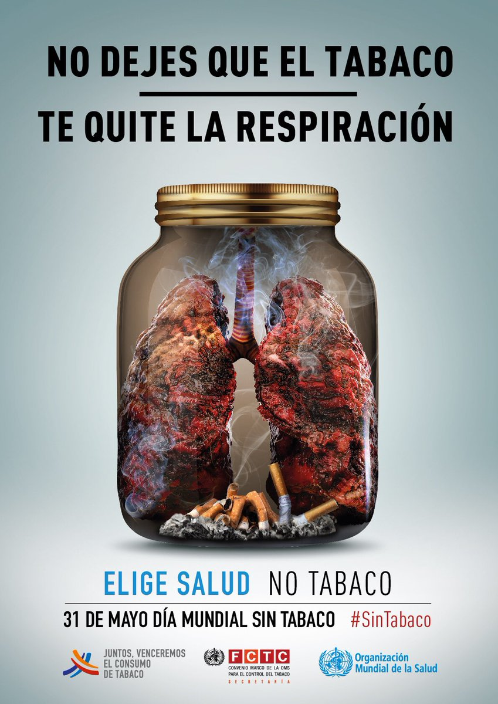
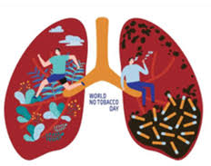
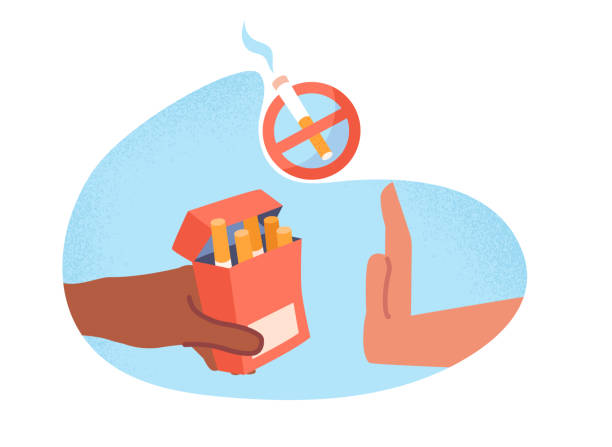

La mejor manera de prevenir el tabaquismo es no consumir tabaco en primer lugar.
La mejor manera de evitar que los niños fumen es que uno mismo no fume. Las investigaciones han demostrado que los niños cuyos padres no fuman o que han dejado de fumar con éxito tienen muchas menos probabilidades de empezar a fumar.

| ANTES | SIGUIENTE | MENU |